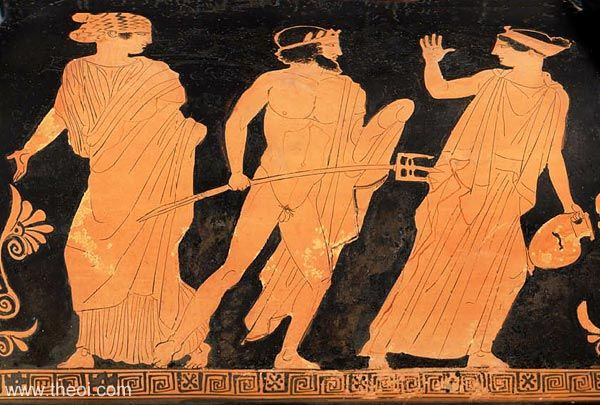
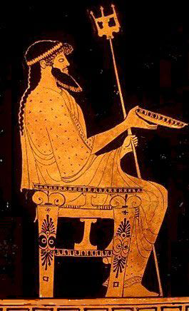

Quem sou eu?


Olímpico que tem como atributo principal o mar. E o Tridente e cavalos e golfinhos e fontes.
Filho de Cronos e Reia, irmão de Héstia, Deméter, Hera, Hades e Zeus. Engolido por seu pai. Vomitado posteriormente pelo mesmo. Recebeu o lote do mar.
Um dos símbolos seus é o Tridente, que recebeu dos Ciclopes.
Na Gigantomaquia matou Polibotes, e isso é notável.
Tem epítetos estranhos, e.g. Tremedor da terra, este porque terremotos são um de seus atributos.
Não foi escolhido como patrono de Atenas, se vinga.
Construiu as muralhas de Tróia, foi negado pagamento, se vinga.
Não foi a ele sacrificado o touro de Creta, se vinga.
Ninguém cegou seu filho, se vinga.
Criador do cavalo, que é, pois, grande símbolo seu, e é retratado às vezes Poseidon com bigas.
Lorde do monte Helicão, por alguma razão. Tem um Palácio em Aegae, debaixo d’água.
Casou-se com Anfitrite, filha mais velha de Nereu, com quem teve um filho, Tritão.
1. Hinos, sejam Homéricos ou Órficos, a Poseidon. Isso porque a divindades eram feitos, e deviam ser apreciados por essas, ou nenhuma necessidade de chamar Musas de Helicão que dançam no trono de Zeus etc a cada duas estrofes haveria. É provável então que Poseidon estimasse hinos a ele dedicados.
2. "In the Wake of Poseidon" King Crimson 1970. Poseidon gosta de Prog.
3. "And You and I" Yes 1972. Como já afirmado, Poseidon gosta de Prog.
4. "I Wanna be Adored" Stone Roses 1989. He doth wanna be adored, no questions as to that (he's a god ffs)
5. Segunda Sinfonia de Mahler, Ressurreição; sinfonias são basicamente o mundo, e todos gostam do mundo, certamente.
1. Jason and the Argonauts 1963. Ele tem um cameo nesse.
2. Troy 2004 dizem que esse não é certo.
3. Hércules 1992 ele tem um cameo nesse.
4. The Wall 1982. Ele gosta de Prog.
5. A Paixão de Joana D'arc 1928, um bom filme.
1. Jogos Olímpicos. Jogos. Olímpicos. Quem não gosta?
2. AC Odyssey (é da h r é ss i a)
3. GoW (?) ele tem um cameo nesse?
4. Xadrez. Cavalos são especialmente bons para fazer forks, acho.
5. Tarô; porque, sabia que se joga Tarô?